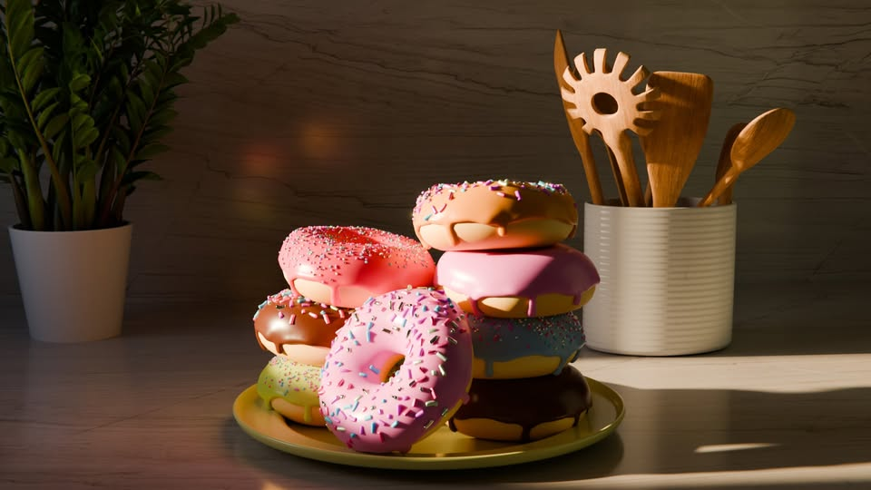

Blender donut

Description
Create the perfect Blender Donut! Follow these “ingredients”
and “steps” to model, texture, and render a sweet 3D donut
masterpiece.
Ingredients
- 1 donut mesh (default torus works great)
- 1 cup of subdivision modifier
- 1/2 cup of smooth shading
- 1 egg of reference image (optional, for inspiration)
- 1/2 cup of material (base color: brown)
- 1 tbsp icing (material + displacement)
- Sprinkles (small spheres with colorful materials)
Steps
- Open Blender and add a torus for your donut base.
- Apply subdivision modifier to smooth out the mesh.
- Enable smooth shading for a polished look.
- Model the icing as a separate mesh or using a sculpting brush.
- Add sprinkles as small spheres with bright materials.
- Set up lighting and camera to render your donut masterpiece.
- Render and enjoy your sweet 3D creation!
Home